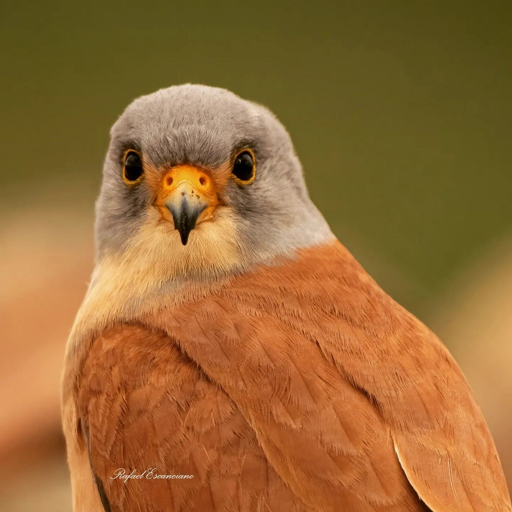
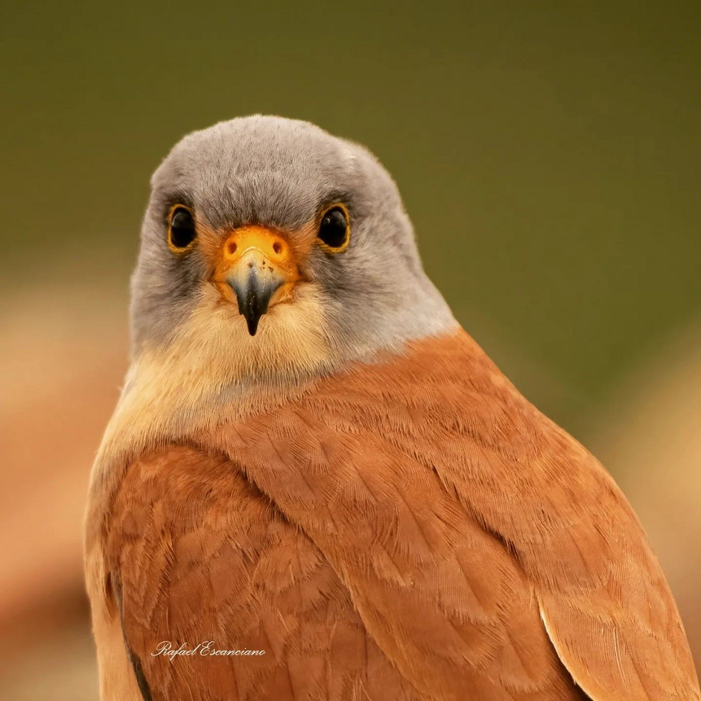
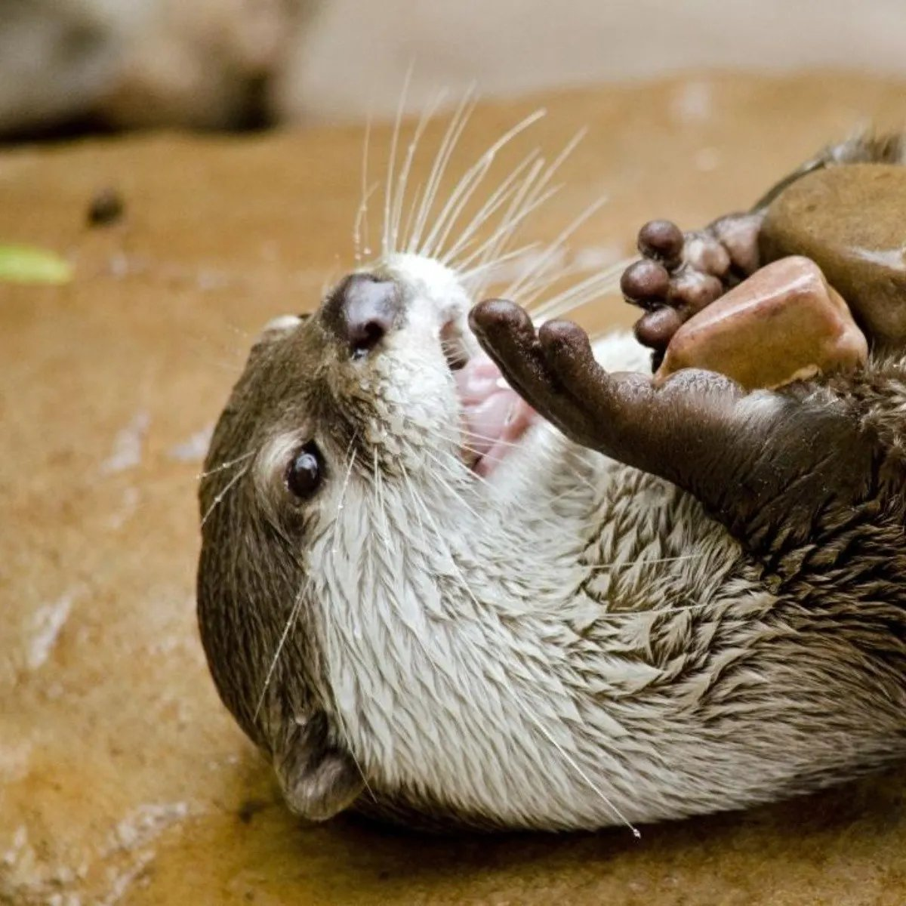
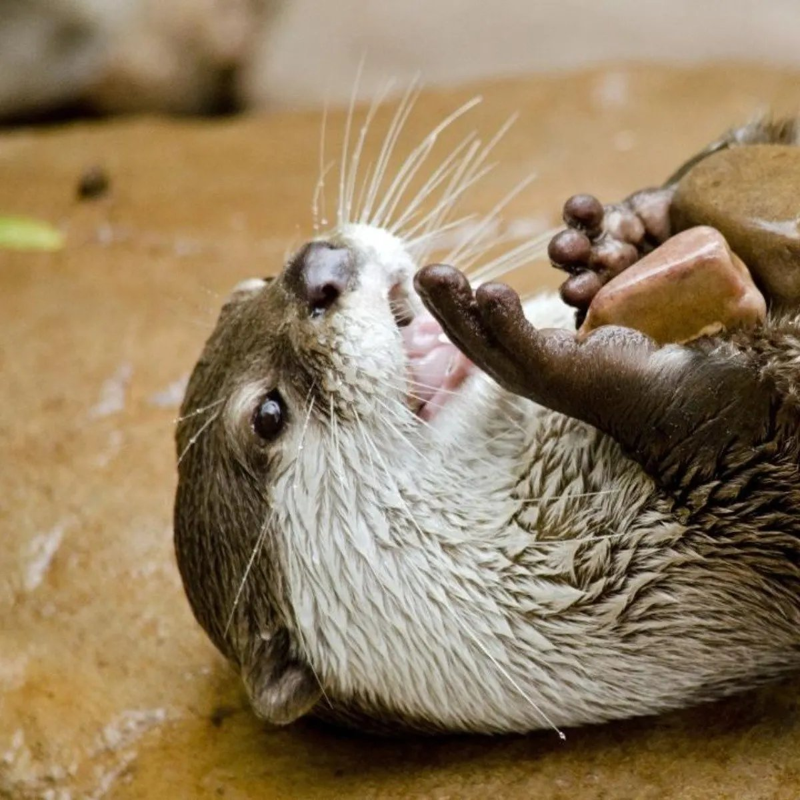

Desde Murcia se lanza un SOS por media decena de especies animales que habitan en mayor o menor número en la Región de Murcia y que se encuentran en peligro de extinción. Son el fartet -un pez-, el cernícalo primilla, el águila perdicera y la avutarda -tres aves- y la nutria -un mamífero-, para los que no hay aprobado ningún plan de recuperación. Además, se incluye en la solicitud al lince ibérico, a pesar de que han desaparecido los pocos ejemplares que había de este animal en el territorio regional, concretamente en la sierra de la Pila.
«Son especies protegidas de las que no quedan muchos ejemplares y están en peligro de extinción, o incluso ya no hay ni indicios de su existencia, como es el caso del lince ibérico. Por ello reclamamos a la Comunidad Autónoma un plan específico para su recuperación atendiendo a la Ley de Fauna Silvestre de 1995», comenta Rubén Vives, portavoz de Ecologistas en Acción.
El fartet se encuentra en el río Chícamo, en Abanilla, así como en la ribera del Mar Menor y en Calblanque. Puede haber varios miles, pero dada su vulnerabilidad esta cifra le convierte en una especie en peligro de extinción.
En la misma situación se encuentra otro animal que vive en las aguas de la Región. Es la nutria, que a pesar de haber aumentado su área de distribución, igualmente se encuentra en riesgo de extinción y se cree que hay en torno a cien ejemplares en los ríos Segura, Argos, Moratalla, Quípar y Mula.
En cuanto a las aves, se estima que hay una decena de parejas de águila perdicera sobrevolando el Noroeste, la costa en torno a Cabo Cope y Cabo Tiñoso y la Cordillera Sur de Murcia.
El cernícalo primilla, por su parte, se da en número aproximado de medio centenar de parejas en el Campo de Cartagena, en el Llano del Cagitán -entre Cieza, Mula y Calasparra- y en el Noroeste.
Mientras, de avutarda existen entre 20 y 30 parejas aproximadamente, las cuales se concentran en el Altiplano, entre Jumilla y Yecla.
Capítulo aparte merece el lince ibérico, que es el felino más amenazado en todo el mundo. En la Región, durante la década de los noventa, se detectó la presencia de algunos ejemplares de este animal que en tiempos fue tan característico de la fauna nacional. Sin embargo, hace años que en la sierra de la Pila, el hábitat donde se registró su paso, se perdieron los indicios de su existencia.
No obstante, tal y como expone Ecologistas en Acción a la hora de reclamar el plan de recuperación, no se pierde la esperanza de que este animal, que se da en mayor número en torno al Parque Nacional de Doñana, en Huelva, vuelva a pasear su imagen por los campos de la región de Murcia.
 

 
